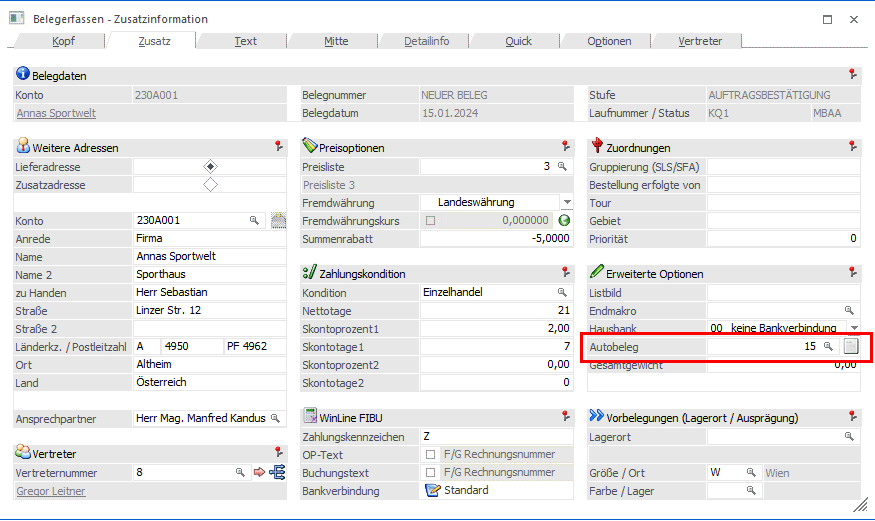

Wurde der Termin erfolgreich gespeichert, so kann der Autobeleg und dann in weiterer Folge der Eintrag in die Telefonliste für den Kunden erzeugt werden.
Dafür wird in den Menüpunkt
1 Erfassen
1 Beleg Erfassen
1 Belege erfassen
gewechselt.
Sinnvollerweise wird für den Autobeleg die Belegstufe Auftrag ausgewählt. Tragen Sie den Kunden für den der Termin erzeugt werden soll ein. Als Laufnummer kann entweder die vorgeschlagene Laufnummer bestätigt oder aus organisatorischen Gründen eine eigene Laufnummer vergeben werden (z.B. Termin1). Damit der Beleg, der in weiterer Folge beim Telefonverkauf nochmals bearbeitet wird, automatisch gedruckt werden kann, sollte als Belegstatus NBAA eingetragen werden. (N für nicht bearbeiten des Angebots und B für den automatischen Druck in dieser Belegstufe). Der Status kann in der Belegart fix vordefiniert werden.
Hinweis
Es werden nur Belege, die in einer der 4 Belegstufen den Status B eingetragen haben, beim Telefonverkauf berücksichtigt.
Im Register "Zusatz" muss nun die zuvor erzeugte Autobelegzeile aus dem Aktionsplan eingetragen werden. Mit Hilfe des Matchcodes (Klick auf die Lupe oder F9) kann diese einfach gefunden und eingetragen werden.

Im Feld Tour, wird eine Tour vorgeschlagen, wenn diese im Personenkontenstamm vorbelegt wurde. Wird keine Tour vorgeschlagen, so kann manuell eine eingetragen werden. Bei der Ausgabe der Telefonliste kann auf diese Tour eingeschränkt werden.
Nach Eintragung der Autobelegzeile kann der Beleg gespeichert werden (F5 und Option "Speichern").
Sie werden beim Speichern gefragt werden, ob Sie das wirklich wollen, da der Beleg nur Artikelzeilen mit der Menge 0 enthält. Bestätigen Sie diese Abfrage mit "Ja", da zu diesem Zeitpunkt noch keine Artikelzeilen für den Beleg notwendig sind. Diese werden erst bei der Kontaktaufnahme, aufgrund der Bestellung des Kunden eingetragen.
Sie können aber auch schon in diesen Beleg Artikelzeilen eintragen. Das ist dann sinnvoll, wenn bestimmt Artikel beim Telefonverkauf immer abgefragt werden sollen, egal ob sie in den letzten Lieferungen enthalten waren oder nicht.
Weitere Bearbeitung siehe Kapitel Telefonliste starten.